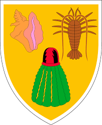
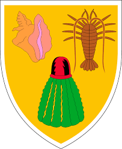

| Quick Facts on about the Turks and Caicos Islands |
| Capital |
Cockburn Town (Population: About 3,720+) on the Grand Turk Island |
| Location |
Northern Caribbean Sea ('Lucayan Archipelago') |
| Overall Land Size |
At least 161+ (Source(s): Google Query, EU, etc.) or 166+ square miles (Source(s): Wikipedia [query], Nations Encyclopedia, etc.); also note that the Encyclopedia Britanica states (quote): "Area at high tide, 238 square miles (616 square km); at low tide, 366 square miles (948 square km)." (all rough estimates) |
| Population |
37,398 (2016; subject to change) (there are other [online] sources that have placed the current population anywhere between 31,000+ and 49,000+ between 2012 and 2016) |
| Year Established as a British 'crown colony' |
1962 (was originally part of the Colony of Jamaica) |
| [Official] Motto |
"Beautiful by nature, clean by choice" |
/BOT_Flags/Flag_of_the_Turks_and_Caicos_Islands.png) 
